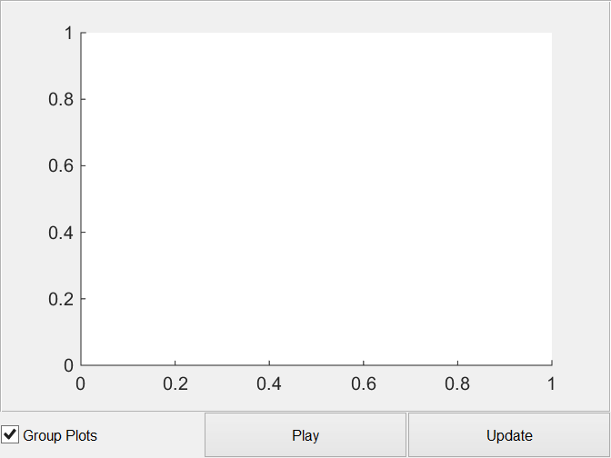

Contents
classdef std_ui < handle
% STD_UI Holds the gui elements for the standard ui class panel % % STD_UI() Creates ui in new figure. % STD_UI(PARENT) Creates ui in parent panel. % STD_UI(PARENT, MAINOBJ) Creates ui with handle to main object. % % Example 1: % obj = std_ui % % Example 2: % Parent = figure % obj = std_ui(Parent) % % Example 3: % Parent = std_panel; % obj = std_ui(Parent) % % STD_UI Methods: % std_ui - Constructor % pbUpdate_Callback - Update channel names % pbPlay_Callback - Play std button % graphicsCode - Graphics Generation Code % % STD_UI Properties: % Parent - Handle of panel to place ui in % MainObj - Handle of main object % Name - Name of UI % UI - Cell UIs for the options % Update - Update callback handle % Tag - Tag to find object % % Written for the BSc graduation project Acoustic Enhancement via % Beamforming Using Smartphones. % % Team: S. Bosma R. Brinkman % T. de Rooij R. Smeding % N. van Wijngaarden E. Wouters % % Supervisor: Jorge Martínez Castañeda % % Contact: E.H.Wouters@student.tudelft.nl % % See also BF_DATA, MAIN_WINDOW
Properties
properties
Parent % Handle of parent
MainObj % Handle of main object
Name = 'Standard UI'; % Name of UI
UI % Cell UIs for the options
Update % Update callback handle
Tag = 'std_ui'; % Tag to find object
end
Methods
methods
Standard Constuctor
function obj = std_ui(parent, mainObj) % Parse Input % figure Handle if nargin == 0 obj.Parent = figure('Name',obj.Name,'NumberTitle','off','resize','on'); elseif nargin >= 1 if ishandle(parent) obj.Parent = parent; else warning(['First argument needs to be a handle,'... 'new figure created.']); obj.Parent = figure('Name',obj.Name,'NumberTitle','off','resize','on'); end end if nargin >= 2 obj.MainObj = mainObj; else % Defaults for references to main object can be set here so % the ui can be tested stanalone obj.MainObj = []; end % Graphics Code obj.UI = obj.graphicsCode(); % Link handle of update callback obj.Update = @obj.pbUpdate_Callback; % Debug % assignin('base','obj',obj) end
Button Update Callback
function pbUpdate_Callback(obj,~,~) % PBUPDATE_CALLBACK disp('Update called for std_ui') end
Button Play Callback
function pbPlay_Callback(obj,~,~) % PBPLAY_CALLBACK end
Standard Graphics Code
function UI = graphicsCode(obj) % GRAPHICSCODE Graphics Code % Standard UI panel % % Example 1: % x=3;y=10; % Grid size % UI.PanPlots = uipanel(obj.Parent, 'Position',grid2pos([1,1,1,y-1,1,y])); % UI.Axes{1} = axes('Parent',UI.PanPlots); % UI.Lines(1) = line('XData', [], 'YData', [], 'Parent',UI.Axes{1}); % UI.cbGroupPlots = uicontrol(obj.Parent,'Style','checkbox',... % 'String','Group Plots','Value',obj.GroupPlots,'Callback',@obj.pbUpdate_Callback,... % 'Units','normalized','Position',grid2pos([1,y,1,1,x,y])); % UI.pbPlay = uicontrol(obj.Parent,'Style','pushbutton',... % 'String','Play','Callback',@obj.pbPlay_Callback,... % 'Units','normalized','Position',grid2pos([2,y,1,1,x,y])); % UI.pbUpdate = uicontrol(obj.Parent,'Style','pushbutton',... % 'String','Update','Callback',@obj.pbUpdate_Callback,... % 'Units','normalized','Position',grid2pos([3,y,1,1,x,y])); % % Replace this code with x=3;y=10; % Grid size UI.PanPlots = uipanel(obj.Parent, 'Position',grid2pos([1,1,1,y-1,1,y])); UI.Axes{1} = axes('Parent',UI.PanPlots); UI.Lines(1) = line('XData', [], 'YData', [], 'Parent',UI.Axes{1}); UI.cbGroupPlots = uicontrol(obj.Parent,'Style','checkbox',... 'String','Group Plots','Value',1,'Callback',@obj.pbUpdate_Callback,... 'Units','normalized','Position',grid2pos([1,y,1,1,x,y])); UI.pbPlay = uicontrol(obj.Parent,'Style','pushbutton',... 'String','Play','Callback',@obj.pbPlay_Callback,... 'Units','normalized','Position',grid2pos([2,y,1,1,x,y])); UI.pbUpdate = uicontrol(obj.Parent,'Style','pushbutton',... 'String','Update','Callback',@obj.pbUpdate_Callback,... 'Units','normalized','Position',grid2pos([3,y,1,1,x,y])); end
ans =
std_ui with properties:
Parent: [1x1 Figure]
MainObj: []
Name: 'Standard UI'
UI: [1x1 struct]
Update: @(varargin)obj.pbUpdate_Callback(varargin{:})
Tag: 'std_ui'
 end
end